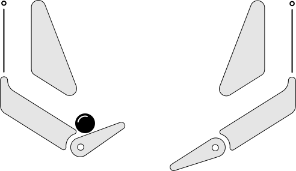

Cradle Often  The cradle is the highest level of control available in the game. It’s a haven of sipped drinks and quiet contemplation. Shots from a cradle release are slower and more consistent than from other feeds.